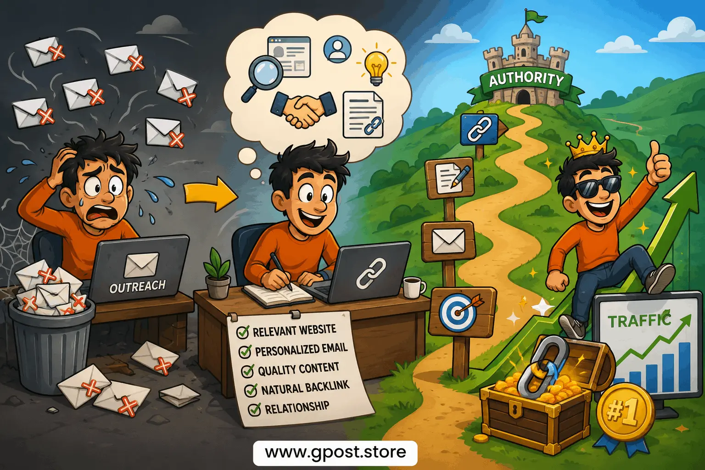

Guest post acceptance rate improvement techniques – Complete SEO Outreach Guide for 2026
Guest post acceptance rate improvement techniques can help website owners, bloggers, SEO professionals, and digital marketers secure better backlinks, improve outreach reply rates, and build stronger authority online. Many people send hundreds of outreach emails but receive little to no responses because their outreach strategy lacks personalization, relevance, and trust signals. See Guest Posting Outreach for more details.
In 2026, guest blogging is no longer about sending generic templates to random websites. Search engines and editors have become smarter. Website owners now prefer quality contributors who understand niche relevance, audience intent, and content value.
This complete guide explains how to improve guest post approval rates using practical outreach systems, relationship-building strategies, smart SEO practices, and proven content techniques that actually work in modern search environments.

Effective guest post outreach strategy for improving backlink quality and SEO authority
What Are Guest post acceptance rate improvement techniques?
Guest post acceptance rate improvement techniques are methods used to increase the percentage of guest post outreach emails that receive positive replies or approvals from website owners and editors.
These techniques focus on improving:
- Outreach personalization
- Content quality
- Niche relevance
- Email structure
- Trust signals
- Relationship-building
The goal is not simply earning backlinks. The real objective is securing high-quality editorial links from relevant websites that improve rankings, traffic, authority, and brand visibility.
Why Guest Post Acceptance Rates Matter
Many SEO beginners focus only on sending more emails. However, experienced outreach specialists focus on improving conversion rates instead of volume.
Higher Quality Backlinks
Relevant guest posts help websites earn contextual backlinks from trusted blogs and publications. These backlinks improve:
- Organic keyword rankings
- Domain authority
- Search visibility
- Semantic SEO relevance
- Entity trust signals
Better Organic Traffic
Guest blogging can drive highly targeted referral traffic from niche audiences. Unlike random traffic sources, relevant visitors are more likely to engage with your website.
Long-Term SEO Authority
Search engines evaluate backlink quality carefully. Editorial backlinks from relevant niche websites often carry stronger trust signals than low-quality directory or spam links.
Industry Networking Opportunities
Professional outreach campaigns help build long-term relationships with:
- Editors
- Blog owners
- SEO managers
- Content teams
- Industry influencers
These relationships can later lead to collaboration opportunities, niche edits, podcast appearances, partnerships, and additional backlink opportunities.
Types of Guest Posting Opportunities
Free Guest Posting Websites
Some blogs accept high-quality content contributions without charging publication fees.
Advantages include:
- Safer editorial standards
- Higher trust
- Relationship opportunities
- Natural backlink profiles
Disadvantages include:
- Longer approval times
- Higher competition
- Stricter editorial requirements
Paid Guest Posts
Some websites charge publishing or editorial fees for sponsored guest posts.
Advantages:
- Faster placements
- Easier approval process
- Predictable workflow
Risks:
- Spam websites
- Link farms
- Google penalties
- Weak editorial quality
Niche-Specific Blogs
Niche relevance often matters more than high authority metrics.
For example:
- SEO blogs
- SaaS websites
- Health publications
- Technology blogs
- Finance websites
A smaller but highly relevant website can sometimes outperform a higher authority but unrelated website.
How to Find Guest Posting Opportunities
Use Google Search Operators
Google search operators remain one of the easiest ways to discover guest posting websites.
Examples:
- "write for us" + SEO
- "guest post guidelines" + marketing
- "submit article" + technology
- "become contributor" + business
Analyze Competitor Backlinks
Competitor analysis helps identify websites already accepting guest posts in your niche.
Popular tools include:
- Ahrefs
- Semrush
- Moz
- Majestic
Look for:
- Author bio links
- Editorial mentions
- Guest author pages
- Contextual backlinks
LinkedIn and Social Media Outreach
Some editors respond faster on professional platforms like LinkedIn compared to cold email outreach.
Relationship-first networking often increases trust and reply rates.
Step-by-Step Guest Posting Strategy
1. Research the Website Carefully
Before sending outreach emails, study the website thoroughly.
Check:
- Content quality
- Topic relevance
- Traffic quality
- Editorial standards
- Outbound link quality
Many outreach campaigns fail because marketers pitch irrelevant content.
2. Use Smart Outreach Personalization
Personalized outreach consistently outperforms generic templates. How to Pitch Bloggers Effectively includes:
- Editor's name
- Reference to recent article
- Specific content idea
- Clear value proposition
Avoid:
- Mass outreach spam
- Overly long emails
- Aggressive sales language
- AI-generated generic intros
3. Focus on High-Quality Content
Your content quality strongly impacts future guest post acceptance rates.
Editors prefer articles that include:
- Original insights
- Research-backed points
- Clear formatting
- Useful examples
- Practical advice
Thin content and fluff rarely succeed in modern outreach campaigns.
4. Build Natural Backlinks
Backlinks should appear naturally inside valuable content.
Best practices:
- Use relevant anchor text
- Avoid over-optimization
- Link contextually
- Prioritize user value
Guest Post Outreach Best Practices
Using proper outreach systems improves both reply rates and relationship quality.
Best Outreach Practices
- Research prospects manually
- Use personalized subject lines
- Pitch highly relevant topics
- Keep emails concise
- Show credibility naturally
- Follow up politely
- Focus on relationships first
Relationship-driven outreach performs better than spam-style campaigns.
Guest Post Pitch Improvement Techniques
Many outreach emails fail because the pitch lacks relevance, trust, or originality.
How to Improve Your Guest Post Pitch
Demonstrate Familiarity
Mention a recent article from the target website.
Offer Unique Content Ideas
Avoid recycled or generic topics.
Show Experience
Include:
- Case studies
- SEO results
- Industry experience
- Writing samples
Reduce Editor Workload
Provide:
- Headline suggestions
- Content outlines
- Relevant references
- Easy communication
Editors prefer contributors who simplify the process.
How to Increase Guest Blogging Success Rate
To increase guest blogging success rate consistently, focus on systems instead of shortcuts.
Better Prospect Selection
Target websites that:
- Match your niche
- Have real traffic
- Maintain editorial quality
- Publish helpful content
Better Content Quality
Exceptional content increases repeat collaboration opportunities.
Better Follow-Up Systems
Many editors miss emails. One polite follow-up after 5 to 7 days often improves response rates.
Better Relationship Management
Editors remember contributors who communicate professionally and consistently deliver value.
Guest Post Email Acceptance Strategy
A strong guest post email acceptance strategy balances personalization, simplicity, and authority.
High-Converting Email Structure
- Personalized greeting
- Relevant topic idea
- Short credibility statement
- Simple call-to-action
Avoid:
- Large attachments
- Long introductions
- Fake compliments
- Pushy language
Common Guest Posting Mistakes
Mass Outreach Spam
Generic bulk outreach usually fails because editors immediately recognize automated emails.
Ignoring Topical Relevance
Backlinks from irrelevant websites often provide weaker SEO impact.
Over-Optimized Anchor Text
Using excessive exact-match anchors may create unnatural backlink patterns.
Low-Quality Websites
Avoid websites with:
- AI spam content
- Excessive outbound links
- Fake traffic
- Thin articles
- Poor indexing health
Advanced SEO Tips for Guest Posting
Prioritize Topical Relevance
Topical relevance often matters more than raw domain authority metrics.
Improve Internal Linking
Strong internal linking supports:
- Semantic SEO
- Topic clusters
- Entity understanding
- Topical authority
Use Diverse Anchor Text
Healthy backlink profiles include:
- Brand anchors
- Generic anchors
- Partial-match anchors
- Naked URLs
Guest Post Link Building strategies help strengthen authority, diversify backlinks, and improve long-term SEO performance when used with relevance and quality-focused outreach.
Hidden SEO Realities Most Beginners Ignore
High DA Does Not Always Mean Better Results
Some high-authority websites sell large numbers of backlinks and pass little real ranking value.
Traffic Quality Matters More Than Metrics
A smaller website with real audience engagement often provides stronger SEO value than inflated authority metrics.
Outreach Saturation Is Real
Editors receive hundreds of outreach emails weekly. Generic templates fail quickly in competitive niches.
SEO Myths vs Reality
Myth: More Backlinks Always Improve Rankings
Reality: Poor-quality backlinks may weaken trust signals.
Myth: Exact Match Anchors Rank Faster
Reality: Excessive exact-match anchors can look manipulative.
Myth: Outreach Automation Has No Risk
Reality: Aggressive automation often damages deliverability and reputation.
Is Guest Posting Still Worth It in 2026?
Yes, guest posting still works extremely well in 2026 when focused on quality and relevance.
Google now evaluates:
- Editorial trust
- Link context
- User value
- Semantic relevance
- Content quality
Spam-based guest posting strategies are risky. Relationship-driven guest blogging remains highly effective.
When Should You Avoid Guest Posting?
Guest posting may not always be the best SEO strategy.
Avoid aggressive guest posting when:
- Your website lacks quality content
- You depend heavily on exact-match anchors
- You buy spam backlinks
- Your outreach is fully automated
- Your niche has limited editorial opportunities
Frequently Asked Questions
What are guest post acceptance rate improvement techniques?
Guest post acceptance rate improvement techniques are SEO outreach methods like personalized pitching, niche targeting, and high-quality content creation to increase approval chances from authoritative websites.
What is guest post acceptance rate in SEO?
Guest post acceptance rate in SEO refers to the percentage of outreach pitches that get approved. It depends on relevance, content quality, domain authority, and email personalization quality.
What are common mistakes that reduce guest post acceptance rate?
Common mistakes include sending generic outreach emails, using irrelevant topics, poor content quality, and spammy link practices, which significantly reduce approval chances from editors.
Guest posting vs niche edits – which is better for SEO?
Guest posting builds fresh contextual content and stronger branding, while niche edits are faster but less controlled. Guest posts are generally safer and better for long-term SEO authority.
How can I improve guest post acceptance rate step by step?
Improve acceptance by researching relevant sites, personalizing outreach, suggesting valuable topics, writing high-quality content, and following up professionally with editors for better response rates.
What is the best SEO strategy for guest post outreach?
The best strategy focuses on niche relevance, relationship building, and personalized outreach instead of mass emailing. This increases trust and significantly improves acceptance rates.
How does guest posting help improve Google rankings?
Guest posting improves rankings by earning contextual backlinks from authoritative sites, increasing domain authority, and boosting topical relevance signals for better organic visibility.
Which tools help in guest post outreach and research?
SEO tools like Ahrefs, Semrush, and Moz help find guest posting opportunities, analyze competitors, and identify high-authority websites for effective outreach campaigns.
Conclusion
Guest post acceptance rate improvement techniques remain one of the most powerful methods for building authority, improving rankings, and growing organic traffic safely in 2026. The biggest difference between successful outreach campaigns and failed ones usually comes down to personalization, trust, niche relevance, and content quality.
Instead of focusing on sending more emails, focus on building smarter systems. Research prospects carefully, create genuinely useful content, personalize outreach naturally, and build long-term relationships with editors and publishers.
Modern SEO rewards expertise, trust, and relevance. When your guest blogging strategy aligns with these principles, both your outreach acceptance rates and backlink quality improve significantly. Contact us for more details.